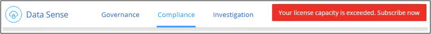

문서 변경 요청
문서 변경 요청 이 페이지 편집
이 페이지 편집 기여하는 방법 자세히 알아보기
기여하는 방법 자세히 알아보기클라우드 데이터 센스에 대한 라이센스 설정
Cloud Manager 작업 공간에서 Cloud Data Sense가 검색하는 첫 번째 1TB의 데이터는 무료입니다. 해당 시점 이후에도 데이터를 계속 스캔하려면 NetApp의 BYOL 라이센스 또는 클라우드 공급자의 Cloud Manager 가입이 필요합니다.
추가 내용을 읽기 전에 몇 가지 참고 사항을 확인하십시오.
-
클라우드 공급자 마켓플레이스에서 이미 Cloud Manager PAYGO(Pay-as-you-Go) 구독을 구독한 경우 Cloud Data Sense도 자동으로 구독됩니다. 다시 가입하지 않아도 됩니다.
-
Cloud Data Sense BYOL(Bring-Your-Own-License)은 스캔할 작업 영역의 모든 작업 환경과 데이터 소스에서 사용할 수 있는 _floating_license입니다. 디지털 지갑에 활성 구독이 표시됩니다.
Cloud Data Sense PAYGO 구독을 사용합니다
클라우드 공급자 마켓플레이스에서 용량제 구독을 통해 Cloud Volumes ONTAP 시스템과 클라우드 데이터 센스와 같은 다양한 클라우드 데이터 서비스를 사용할 수 있습니다.
언제든지 구독할 수 있으며 데이터 양이 1TB를 초과할 때까지 요금이 청구되지 않습니다. 항상 데이터 감지 대시보드에서 스캔되는 데이터의 총 양을 볼 수 있습니다. 지금 가입(Subscribe Now) 단추를 사용하면 준비가 되면 쉽게 가입할 수 있습니다.

이러한 단계는 _ 계정 관리자 _ 역할을 가진 사용자가 완료해야 합니다.
-
Cloud Manager 콘솔의 오른쪽 위에서 설정 아이콘을 클릭하고 * 자격 증명 * 을 선택합니다.

-
AWS 인스턴스 프로파일, Azure 관리 서비스 ID 또는 Google Project에 대한 자격 증명을 찾습니다.
구독은 인스턴스 프로필, 관리 서비스 ID 또는 Google Project에 추가해야 합니다. 그렇지 않으면 충전이 작동하지 않습니다.
AWS에 대한 아래 표시된 것처럼 이미 구독을 사용 중인 경우에는 모두 설정된 것이므로 다른 작업은 필요하지 않습니다.

-
구독이 아직 없는 경우 자격 증명 위에 마우스를 올려 놓고 작업 메뉴를 클릭한 다음 * 가입 연결 * 을 클릭합니다.

-
기존 구독을 선택하고 * Associate * 를 클릭하거나 * Add Subscription * 을 클릭하고 단계를 따릅니다.
다음 비디오에서는 을 연결하는 방법을 보여줍니다 "AWS 마켓플레이스 를 참조하십시오" AWS 구독:
다음 비디오에서는 을 연결하는 방법을 보여줍니다 "Azure 마켓플레이스 를 참조하십시오" Azure 구독 신청:
다음 비디오에서는 을 연결하는 방법을 보여줍니다 "GCP 마켓플레이스" GCP 구독 신청:
Cloud Data Sense BYOL 라이센스 사용
NetApp에서 제공하는 자체 라이센스는 1년, 2년 또는 3년간 제공됩니다. BYOL * Cloud Data Sense * 라이센스는 전체 용량이 * 모든 * 작업 환경 및 데이터 소스 * 간에 공유되는 _ floating_license로, 초기 라이센스 등록 및 갱신이 용이합니다.
Cloud Data Sense 라이센스가 없는 경우 다음 연락처로 문의해 주십시오.
-
mailto:ng-contact-data-sense@netapp.com?subject=Licensing [라이센스 구매를 위해 이메일 보내기].
-
Cloud Manager의 오른쪽 하단에 있는 채팅 아이콘을 클릭하여 라이센스를 요청하십시오.
선택적으로 사용하지 않을 Cloud Volumes ONTAP에 대해 할당되지 않은 노드 기반 라이센스가 있는 경우 동일한 달러 당량 및 만료 날짜가 있는 클라우드 데이터 감지 라이센스로 전환할 수 있습니다. "자세한 내용을 보려면 여기를 클릭하십시오".
Cloud Manager의 Digital Wallet 페이지를 사용하여 Cloud Data Sense BYOL 라이센스를 관리할 수 있습니다. 새 라이센스를 추가하고 기존 라이센스를 업데이트할 수 있습니다.
Cloud Data Sense 라이센스 파일을 받으십시오
Cloud Data Sense 라이센스를 구입한 후에는 Cloud Data Sense 일련 번호 및 NSS 계정을 입력하거나 NLF 라이센스 파일을 업로드하여 Cloud Manager에서 라이센스를 활성화합니다. 아래 단계에서는 NLF 라이센스 파일을 가져오는 방법을 보여 줍니다(해당 방법을 사용하려는 경우).
인터넷에 액세스할 수 없는 온프레미스 사이트의 호스트에 Cloud Data Sense를 배포한 경우 인터넷에 연결된 시스템에서 라이센스 파일을 얻어야 합니다. 일련 번호 및 NSS 계정을 사용하여 라이센스를 활성화하는 것은 다크 사이트 설치에 사용할 수 없습니다.
-
에 로그인합니다 "NetApp Support 사이트" 시스템 > 소프트웨어 라이센스 * 를 클릭합니다.
-
Cloud Data Sense 라이센스 일련 번호를 입력합니다.

-
라이센스 키 * 에서 * NetApp 라이센스 파일 가져오기 * 를 클릭합니다.
-
Cloud Manager 계정 ID(지원 사이트에서 테넌트 ID라고 함)를 입력하고 * 제출 * 을 클릭하여 라이센스 파일을 다운로드합니다.

Cloud Manager 상단의 * Account * (계정 *) 드롭다운을 선택한 다음 계정 옆의 * Manage Account * 를 클릭하여 Cloud Manager 계정 ID를 찾을 수 있습니다. 계정 ID는 개요 탭에 있습니다.
Cloud Data Sense BYOL 라이센스를 계정에 추가
Cloud Manager 계정에 대한 Cloud Data Sense 라이센스를 구입한 후 Data Sense 서비스를 사용하려면 Cloud Manager에 라이센스를 추가해야 합니다.
-
모든 서비스 > 디지털 지갑 > 데이터 서비스 라이센스 * 를 클릭합니다.
-
라이선스 추가 * 를 클릭합니다.
-
Add License_대화 상자에서 라이센스 정보를 입력하고 * Add License * 를 클릭합니다.
-
데이터 감지 사용권 일련 번호가 있고 NSS 계정을 알고 있는 경우 * 일련 번호 입력 * 옵션을 선택하고 해당 정보를 입력합니다.
드롭다운 목록에서 NetApp Support 사이트 계정을 사용할 수 없는 경우 "NSS 계정을 Cloud Manager에 추가합니다".
-
데이터 감지 라이센스 파일(어두운 사이트에 설치할 때 필요)이 있는 경우 * 라이센스 파일 업로드 * 옵션을 선택하고 메시지에 따라 파일을 첨부합니다.

-
Cloud Manager에서 라이센스를 추가하므로 Cloud Data Sense 서비스가 활성화됩니다.
Cloud Data Sense BYOL 라이센스 업데이트
라이센스가 부여된 기간이 만료일이 다가오고 있거나 라이센스가 부여된 용량이 한도에 도달한 경우 Cloud Data Sense에서 알림을 받게 됩니다.

이 상태는 Digital Wallet 페이지에도 표시됩니다.

클라우드 데이터 감지 라이센스가 만료되기 전에 Cloud Data Sense 라이센스를 업데이트하여 데이터 스캔 기능을 중단하지 않아도 됩니다.
-
Cloud Manager의 오른쪽 하단에 있는 채팅 아이콘을 클릭하여 특정 일련 번호에 대한 Cloud Data Sense 라이센스에서 기간 연장 또는 추가 용량을 요청합니다. 또한 라이센스 업데이트를 요청하려면 이메일을 보내십시오을 사용할 수 있습니다.
라이센스 비용을 지불하고 NetApp Support 사이트에 등록된 Cloud Manager는 Digital Wallet의 라이센스를 자동으로 업데이트하며, 데이터 서비스 라이센스 페이지에는 변경 사항이 5~10분 안에 반영됩니다.
-
Cloud Manager에서 라이센스를 자동으로 업데이트할 수 없는 경우(예: 어두운 사이트에 설치된 경우) 라이센스 파일을 수동으로 업로드해야 합니다.
-
Data Services Licenses_탭의 Digital Wallet 페이지에서 을 클릭합니다
 업데이트하는 서비스 일련 번호에 대해 * Update License * 를 클릭합니다.
업데이트하는 서비스 일련 번호에 대해 * Update License * 를 클릭합니다.
-
Update License_page에서 라이센스 파일을 업로드하고 * Update License * 를 클릭합니다.
Cloud Manager가 라이센스를 업데이트하여 Cloud Data Sense 서비스가 계속 활성화될 수 있도록 합니다.
BYOL 라이센스 고려사항
Cloud Data Sense BYOL 라이센스를 사용하는 경우, 스캐닝하는 모든 데이터의 크기가 용량 제한에 도달하거나 라이센스 만료 날짜가 임박한 경우 Cloud Manager에서 사용자 인터페이스에 경고를 표시합니다. 다음과 같은 경고가 표시됩니다.
-
스캔 중인 데이터의 양이 라이센스 용량의 80%에 도달한 경우, 제한에 도달하면 다시 한 번 표시됩니다
-
라이센스가 만료되기 30일 전에 라이센스가 만료되고 라이센스가 만료되면 다시 만료됩니다
이러한 경고가 표시되면 Cloud Manager 인터페이스 오른쪽 아래에 있는 채팅 아이콘을 사용하여 라이센스를 갱신하십시오.
라이센스가 만료되면 다음 두 가지 상황이 발생할 수 있습니다.
-
사용 중인 계정에 마켓플레이스 가입이 있는 경우 Data Sense는 계속 실행되지만 PAYGO 라이센스 모델로 이전됩니다. 스캔 중인 데이터의 양에 대한 요금이 부과됩니다.
-
사용 중인 계정에 마켓플레이스 가입이 없는 경우 데이터 센스가 계속 실행되지만 경고가 계속 표시됩니다.
BYOL 구독을 갱신하면 Cloud Manager에서 라이센스를 자동으로 업데이트합니다. Cloud Manager가 보안 인터넷 연결을 통해 라이센스 파일에 액세스할 수 없는 경우(예: 어두운 사이트에 설치된 경우) 직접 파일을 얻고 Cloud Manager에 수동으로 업로드할 수 있습니다. 자세한 내용은 을 참조하십시오 Cloud Data Sense 라이센스를 업데이트하는 방법.
PAYGO 라이센스로 전환된 시스템은 자동으로 BYOL 라이센스로 돌아갑니다. 라이센스 없이 실행 중인 시스템은 경고 표시를 중지하고 라이센스가 만료된 동안 발생한 작업에 대해 비용이 청구됩니다.